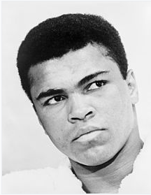

Muhammad Ali (born Cassius Marcellus Clay Jr.; January 17, 1942 – June 3, 2016) was an American professional boxer and activist. He is widely regarded as one of the most significant and celebrated sports figures of the 20th century. From early in his career, Ali was known as an inspiring, controversial, and polarizing figure both inside and outside the ring.
Cassius Clay was born and raised in Louisville, Kentucky, and began training as an amateur boxer when he was 12 years old. At age 18, he won a gold medal in the light heavyweight division at the 1960 Summer Olympics in Rome and turned professional later that year. At age 22 in 1964, he won the WBA, WBC, and lineal heavyweight titles from Sonny Liston in a big upset. Clay then converted to Islam and changed his name from Cassius Clay, which he called his "slave name", to Muhammad Ali. He set an example of racial pride for African Americans and resistance to white domination during the Civil Rights Movement.
In 1966, two years after winning the heavyweight title, Ali further antagonized the white establishment by refusing to be drafted into the U.S. military, citing his religious beliefs and opposition to American involvement in the Vietnam War. He was eventually arrested, found guilty of draft evasion charges, and stripped of his boxing titles. He successfully appealed the decision to the U.S. Supreme Court, which overturned his conviction in 1971, by which time he had not fought for nearly four years and thereby lost a period of peak performance as an athlete. Ali's actions as a conscientious objector to the war made him an icon for the larger counterculture generation.